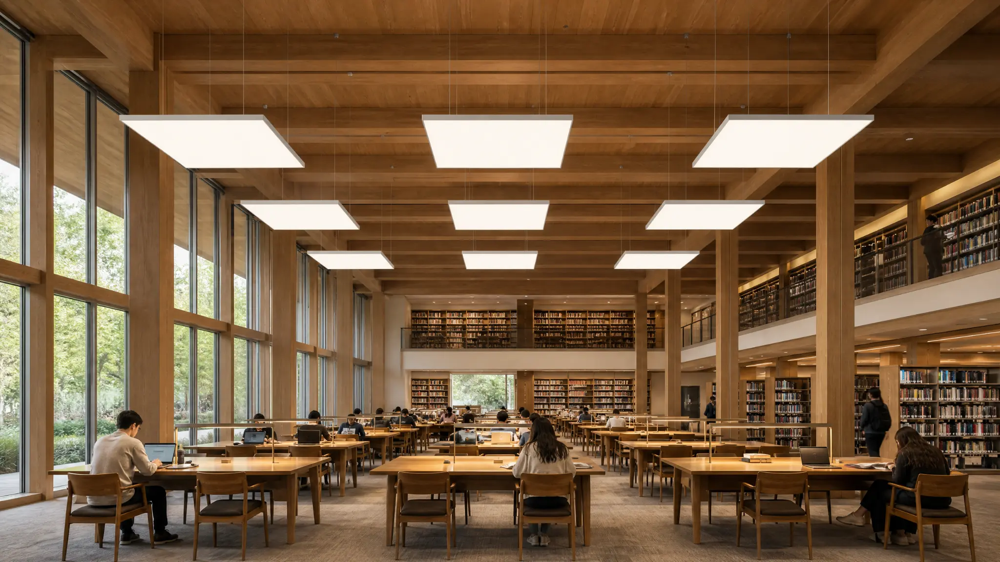

Luminous ceilings, walls and feature surfaces.
LumosCielo combines an aluminum frame, stretch diffuser and backlighting in one system. Choose Standard for predefined forms and sizes, or Custom for project-specific form, dimensions and lighting.
Explore LumosCielo